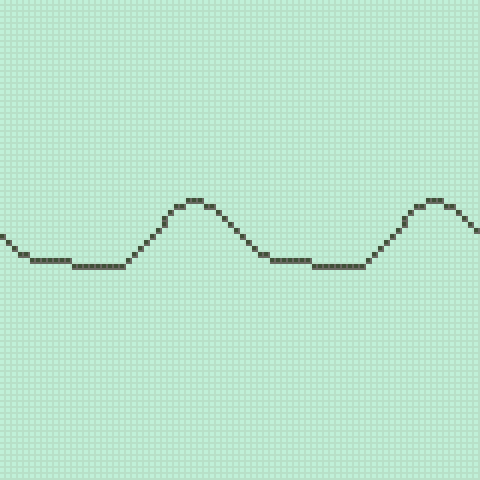
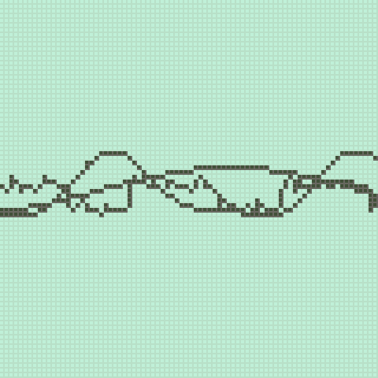
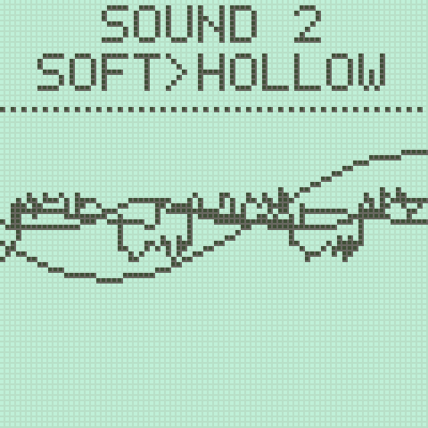
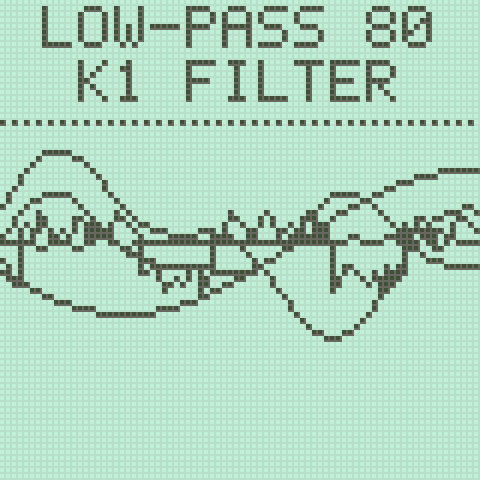
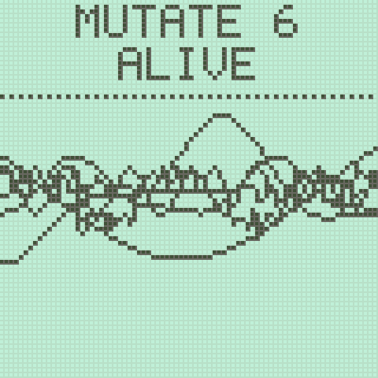

What's inside
An instrument that listens and answers, on the FM-1's own keys, knobs, screen and lights. It runs on the FM1 Open V14 engine.
AI on the device
A small neural network, about 8,400 weights in 8 bits, runs on the FM-1 itself. No phone, no cloud, no cable.
Your motif, its answer
You play 1 to 16 notes. It writes an answer of the same length, in the key and range you played, and loops both.
Alive every repeat
Each time round it changes a step or two of its answer, stays about as sparse as you, and now and then drifts back.
Builds the track
After 8 bars the kick comes in, then one more sound every 8 bars: bass, hats, drone, clap, echo, perc.
Breaths
Sounds rest for 1, 2 or 4 bars and come back on the 8-bar line. Now and then the floor drops out for a breakdown.
Cut in any time
Play a new melody while it runs. The groove keeps going, the model waits, then carries your new idea on.
A sound that evolves
PRESETS morphs the melody's sound in 64 small steps through eight FM timbres, from SOFT to BELL, ACID and VAPOUR.
Hands on the model
K3 sets how much it mutates, from a frozen loop to wild. K4 makes it play sparser or busier. Plus filter, drive, tempo and note length.
Your drums, continued
The 11 buttons from FX to REC are drum pads: kick, snare, clap, rim, hats, toms, ride, shaker, cowbell. Tap a groove and a second model keeps it going as an extra layer.
Mute and solo
OCT− takes the sounds out one by one, OCT+ brings them back. Hold both: only one random sound plays until you let go.
Neural lights
All 41 key and button lights fire in time: every note sends an impulse along the keys, every bar line a wave through the panel.
How it plays
There is nothing to set up. Switch on, play, listen.
Give it an idea
The start screen says
PLAY ME 1-16 NOTES. Play a short melody. The first note starts a silent 132 BPM clock and every note snaps to a sixteenth.Stop, and it answers
Leave a short gap. Right on the next sixteenth the model plays its answer, the same length as your motif: 1 bar for 1 bar, 2 for 2. Then both loop.
Let it grow
Every repeat sounds a little different. Every 8 bars a new sound joins, in this order:
- 0MELODY
- 8KICK
- 16BASS
- 24HATS
- 32DRONE
- 40CLAP
- 48ECHO
- 56PERC
Steer it
Turn the knobs: change the sound, open or close the filter, let the model mutate more or less. A short label shows on the screen while you turn.
Change your mind
Play a new melody at any moment. Everything keeps playing, the model carries the new motif on, and the sounds that were not in yet arrive in their own time. HOME goes back to the start.
Knobs
Seven knobs change the music while it plays. MASTER stays the volume. HOME puts every knob back to its start value.
| Knob | Name on screen | What it does | Range |
|---|---|---|---|
| PRESETS | SOUND | The melody's sound evolves a little with every detent: SOFT, HOLLOW, BELL, GLASS, METAL, ACID, REED, VAPOUR, and round again. The screen shows where you are, for example HOLLOW>BELL. | 64 steps, endless |
| K1 | LOW-PASS / HIGH-PASS | DJ filter on the whole mix. Left darkens, right thins out, the middle is off. | −100 … 0 … +100 |
| K2 | DRIVE | Saturation of the whole mix. | 0 … 100 |
| K3 | MUTATE | How much the model changes on every repeat, and how adventurous its notes are. 0 FROZEN, 1–3 CALM, 4–7 ALIVE, 8–10 WILD. | 0 … 10, starts at 5 |
| K4 | NOTES | SPARSE answers with more rests, or BUSY ones with more notes. | −5 … +5 |
| SELECT | TEMPO | Tempo of everything. | 118 … 140 BPM |
| ALGORITHM | LENGTH | Note length of the melody: STACCATO, PLUCK or LEGATO. | 15 … 120 % |
Drum pads and OCT
The buttons above the screen play drums. Tap 1 or 2 bars and stop, just like the melody: the groove model answers with a varied copy and develops it a little every repeat. Your groove is an extra layer, on top of Johnny's own kick, hats, clap and perc. While you tap a new groove, the old one waits.
| Button | Plays | Button | Plays |
|---|---|---|---|
| FX | Kick | SAVE | Low tom |
| SCL | Snare | ARP | High tom |
| ENV | Clap | SEQ | Ride |
| LFO | Rim | PLAY | Shaker |
| EDIT | Closed hat | REC | Cowbell |
| GLO | Open hat | HOME | Back to the start |
OCT−
Mutes the sound you hear that came in last, then the one before, down to one sound. Its light stays on while anything is muted.
OCT+
Brings the muted sounds back, the last muted first.
Both, held
Only one random sound that is playing stays, for as long as you hold. Let go and everything is back as it was.
Screens
80 × 80 square pixels on the 240 × 240 screen, two shades of green, no phone maker's logo. One oscillator line for every sound; a sound that rests loses its line. All pictures come from the firmware's own drawing code.




HOLLOW, over the lines">

Neural lights
The FM-1's lights are on or off, so Johnny draws with movement instead of brightness. Impulses run along the 27 keys like signals along a nerve and now and then branch over to the 14 buttons. The strip under the screen at the top of this page runs the same rules.
| Sound | Light |
|---|---|
| MELODY | Two impulses leave the key of the note, one left, one right, with a short tail. |
| BAR LINE | With the kick in: a wave through the keys one way and the buttons the other. |
| KICK | A short, fast synaptic burst somewhere on the keys. |
| BASS | The key of the root note blinks. |
| HATS, PERC | Single neurons fire for a moment. |
| CLAP | An impulse runs along the button row. |
| ECHO | A slower impulse on the buttons. |
| YOUR NOTES | Impulses from the key you play. |
| DRUM PADS | Each pad's own light flashes on its hits, yours and the model's; kick, snare and clap also send a small impulse. |
| START SCREEN | The net rests and sparks slowly. |
Install in five minutes
In desktop Chrome or Edge, over USB. The original V15 firmware is inside the installer, so you can always go back.
Back up
Export the projects, voices and samples you want to keep.
Connect
Switch the FM-1 on and plug it straight into the computer with a USB data cable.
Install
Open the installer page, press START and follow it. Coming from stock V15, enable force flash once.
Play
The FM-1 restarts on the green NEURAL JOHNNY screen. Play a few notes.
Good to know
What the model learned
It was trained on a rule-built set of hypnotic techno motifs: minor modes, pedal tones, short cells repeated with small changes. Anyone can retrain it on their own loops with one Python script.
Kept in key
The model only picks notes from the scale and range of what you played, so even a WILD setting stays musical.
Two models
The melody model (about 8,400 weights) and the groove model (about 4,400 weights) are separate. The groove model gives each of the 11 drums its own chance per sixteenth and mostly keeps to the drums you played.
Buttons are not pads
The FM-1's buttons have no velocity and a firmer press than rubber pads. Every hit snaps to a sixteenth, so a rough tap still lands in time.
Its own sounds
Johnny plays its own small synth (FM melody, kick, bass, noise drums, drone). The FM-1's DX7 engine stays silent; MASTER is still the volume.
Saves nothing
Neural Johnny does not write to the FM-1's memory. Each session starts fresh from the start screen.